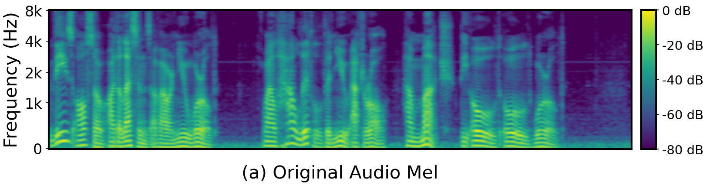
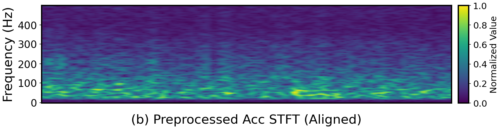
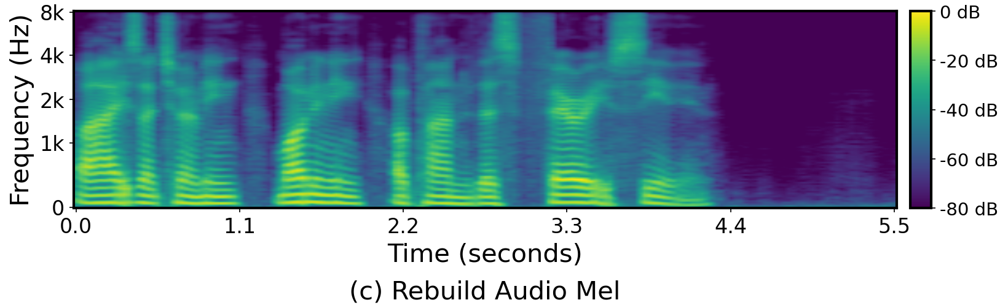
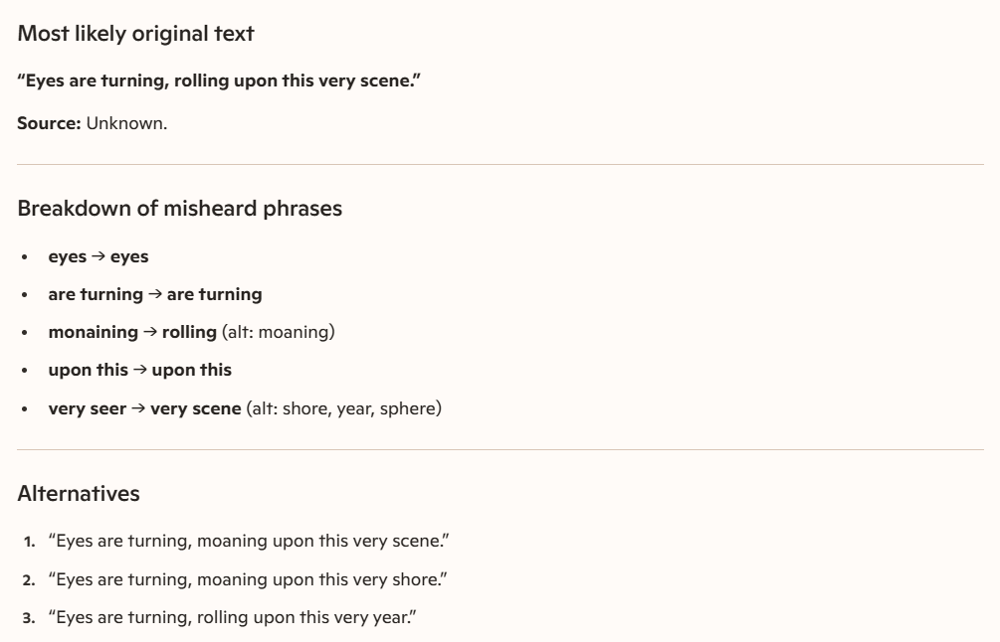
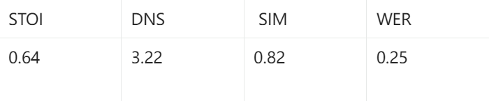
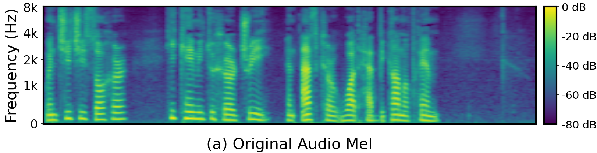
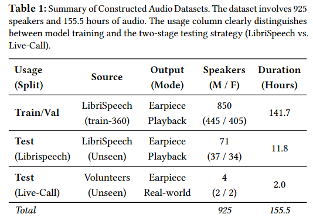
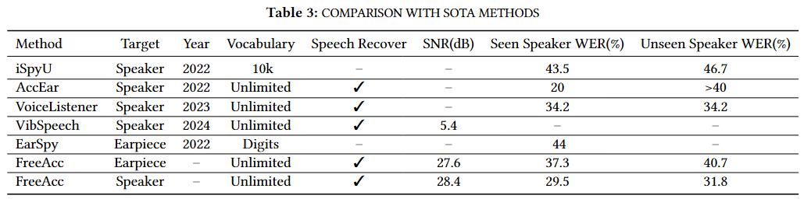
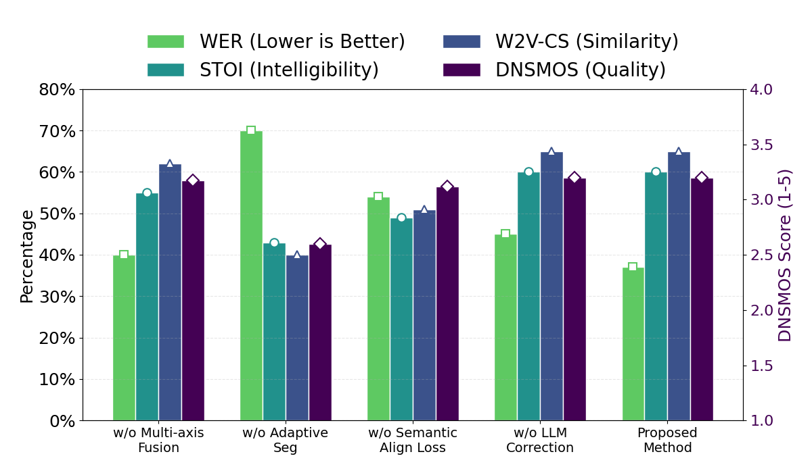

Table of Contents
Abstract
Mobile users commonly rely on smartphone earpieces for highly sensitive communications, assuming that physical sound isolation effectively protects conversational privacy. In this paper, we challenge this assumption and present VibWhisper, the first system to demonstrate that zero-permission mobile accelerometers can recover intelligible speech from the weak vibrations generated by smartphone earpieces...
Experimental Results
Base Group Analysis
Samsung Galaxy S21 | Earpiece | Volume: 100% | Lab Environment
Original Audio
Ground Truth Text
eyes are turning rolling upon this very scene.

Vibration Signal (Acc STFT)
Raw accelerometer data processed via STFT.
Recovered Audio
ASR Recognition
eyes are turning monaining upon this very seer.

Final LLM Semantic Repair
Eyes are turning, rolling upon this very scene.


Playback Mode Control Group
Oneplus 8T | Earpiece | Volume: 100% | Lab Environment
Original Audio
Ground Truth Text
when chichi saw her he came into her tree and asked her what had become of him.

Overall Performance

Experimental Setup

Dataset Characteristics

